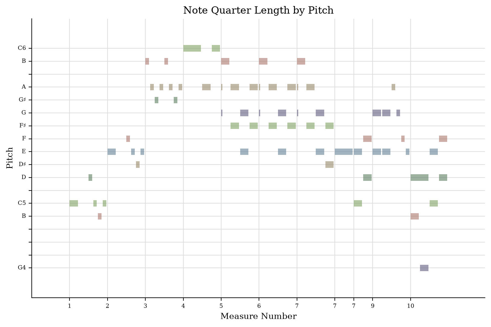
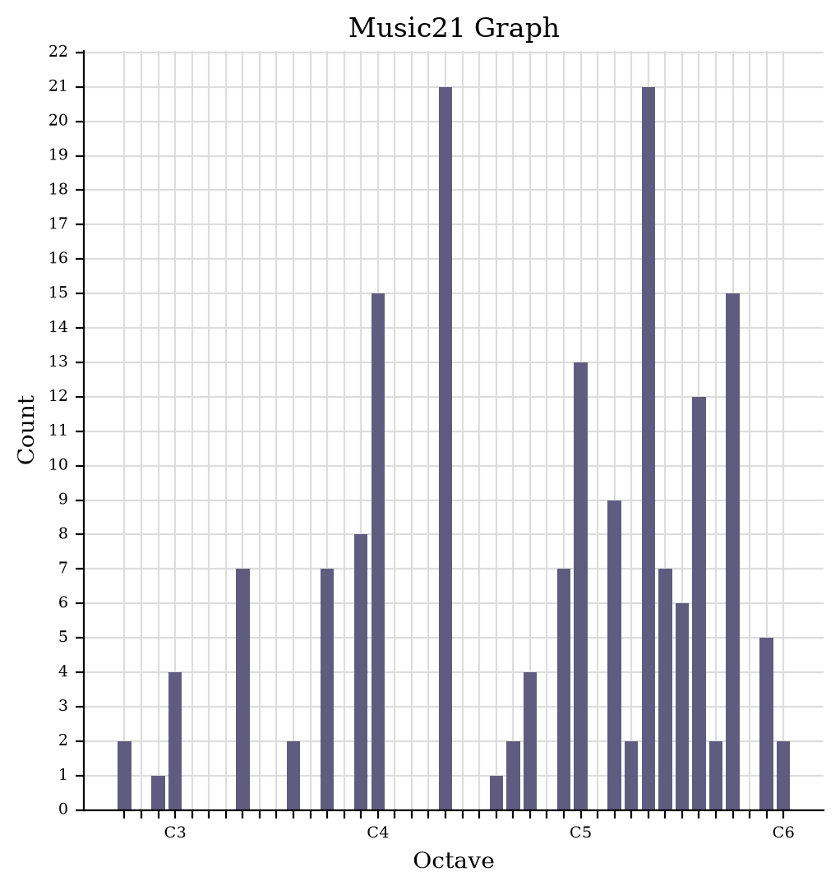
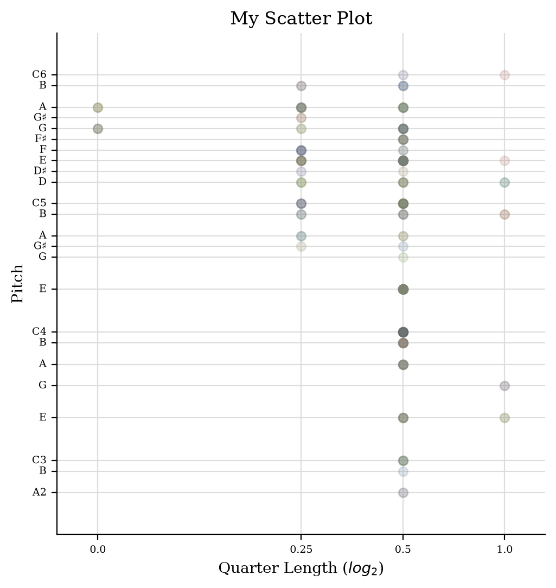

Symbolic music analysis
Task 1: The jSymbolic analysis
According to the results of the jSymbolic analysis, the pitch range of my research spans 39 semitones, indicating a relatively wide range. The average MIDI pitch is 69, corresponding to the note A4. Moreover, the most common pitch is 4, representing the note E. Therefore, E is the most frequently occurring pitch in this section. However, further analysis using music21 is required to assess its relationship to the key. The MIDI value of the final note is 72, corresponding to C5. The most common rhythmic unit is 0.25 quarter notes, equivalent to a sixteenth note, which shows that the rhythm in this section is lively and smooth.
File labels and sources
- MusicXML Score: MusicXML score
- MIDI Analysis Input: MIDI file
- jSymbolic Feature Values: Feature values report (CSV)
- jSymbolic Feature Definitions: Feature definitions report (XML)
Task 2: Analysis from Music 21
Piano Roll (Bars 1–10)
The piano roll extracted from Music 21 shows changes in pitch and note duration in the selected bars. The visible pitch range extends from G4 to C6, with repeated notes appearing around E5 and A5. Shorter horizontal bars indicate active melodic movement, whilst longer bars represent notes of greater duration.

Pitch Histogram
The pitch histogram shows the frequency of occurrence of each pitch in the analysed passage. E4 and E5 are the two most frequently occurring pitches, each appearing 21 times. This finding is consistent with the analysis results from jSymbolic, further confirming that E is the most frequently occurring pitch in this passage.

The Scatter Plot
The scatter plot uses pitch as the vertical axis and note duration as the horizontal axis. The plot reveals that many of the visible clusters are distributed at 0.5 quarter-note units across both the lower and upper registers. Meanwhile, the points located at 0.25 quarter-note units are concentrated in the upper register.

Reflection
I used jSymbolic and music21 to analyse Mozart pieces, generating piano roll diagrams, pitch histograms and scatter plots. I found that data from different file formats could not be directly compared. For example, note durations in MIDI reflect interpretative choices, whereas MusicXML records note values. Therefore, shorter notes in MIDI do not show that the original score consists of sixteenth notes. Moreover, I also found that combining octaves makes it easier to compare the distribution of pitch classes, but it will ignore the differences in pitch ranges. This will make me distinguish the intrinsic characteristics of the music and realize the significance of comparison.